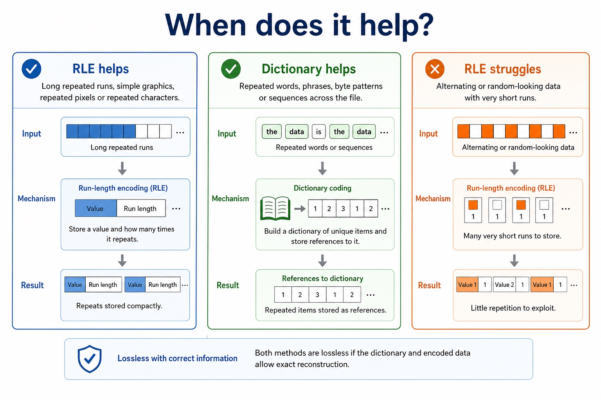
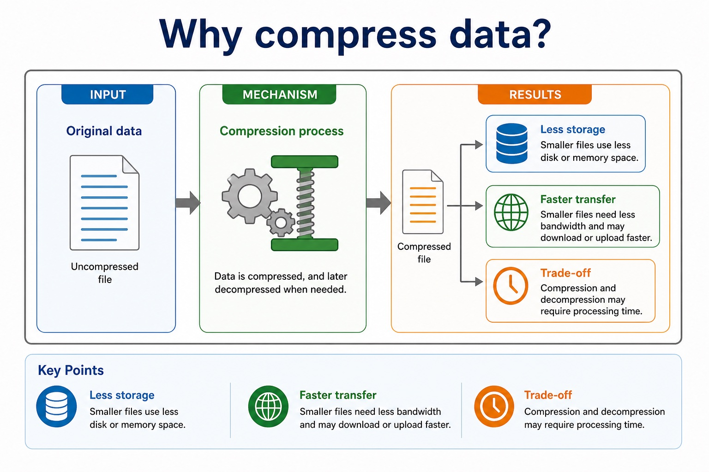

Cambridge AS9618 | Paper 1 | Section 1: Information representation
Sound representation and file compression
Flexible-depth lesson
S1.10, S1.11 | Learn from the diagrams, test the method, then choose the practice you need.
Choose a Quick, Full or Deep route
Quick route
Use the diagnostic, learning objectives, first worked example and foundation question. Stop once the learner can explain the central distinction accurately.
Full route
Use every knowledge-point material set, the worked method, the terminology check and all questions.
Deep route
Add the prerequisite refresher, ask learners to connect the concept checklist, discuss the labelled extension and complete a transfer question without a model answer.
Part 1 | optional depth
Prerequisite knowledge and quick diagnostic
Recall S1.01, S1.08, S1.09, S1.10 before starting this lesson.
Give one accurate definition or method step before continuing. If it is missing, revisit only that prerequisite.
Open optional prerequisite refresher
Use and distinguish kibi/kilo, mebi/mega, gibi/giga and tebi/tera; binary prefixes use powers of 1024 and decimal prefixes use powers of 1000.
Show understanding of binary magnitudes and the difference between binary prefixes and decimal prefixes.
Use and understand the terms pixel, file header, image resolution, screen resolution and colour depth/bit depth. Required effects concern image resolution and colour depth/bit depth.
Show understanding of how data for a bitmapped image are encoded; perform calculations to estimate the file size for a bitmap image; show understanding of the effects of changing elements of a bitmap image on the image quality and file size.
Use drawing object, property and drawing list; a justification must connect bitmap/vector characteristics to the stated application.
Show understanding of vector-graphic encoding and justify bitmap or vector storage for a given task.
Part 2 | knowledge-point material sets
Learn each point through visuals
Follow the map, the three-part explanation and the concrete cue. Open precise wording only after the idea is clear.
Open the concept checklist and choose what to teach
sound
digital representation
analogue-to-digital sampling
sampling rate
sampling resolution
file size
accuracy
compression
lossy
lossless
text
bitmap
vector
RLE / run-length encoding
01
S1.10 · concept
Sound · Digital representation · Analogue-to-digital sampling · Sampling rate
Meaningsound-file-size calculation is not stated as a compulsory requirement
MechanismExplain the impact of changing sampling rate and sampling resolution on file size and accuracy
ConsequenceIncreasing sampling resolution stores more bits for each sample, which gives more amplitude levels, can improve amplitude accuracy and increases file size
More samples per second; may improve accuracy; increases file size.
Higher sampling resolution
More bits per sample; more amplitude levels; increases file size.
Longer duration
More seconds of samples; increases file size in direct proportion.
More channels
More separate audio streams; stereo doubles mono size when other factors match.
03
Process · 3 of 5
Sampling turns an analogue wave into digital values
Open text transcript
Analogue sound
A continuous wave. The pressure changes smoothly over time.
A measurement of the wave amplitude at one moment in time.
Digital sound
A sequence of sample values stored as binary numbers.
04
Concrete example · 4 of 5
Sampling resolution: bits per sample
Open text transcript
Sampling resolution is the official syllabus term; sample resolution is a common synonym.
An 8-bit sampling resolution provides 2^8 = 256 possible amplitude levels.
A 16-bit sampling resolution provides 2^16 = 65,536 possible amplitude levels.
More bits per sample can represent amplitude more precisely, but use more storage.
05
Diagram · 5 of 5
Sampling rate: samples per second
Open text transcript
Definition
Sampling rate is the number of samples taken each second.
It is commonly measured in hertz, Hz.
A higher sampling rate records more measurements each second.
This can improve accuracy, but increases file size.
Open precise syllabus wording
Show understanding of how sound is represented and encoded; show understanding of the impact of changing the sampling rate and resolution.
Use the terms sampling, sampling rate and sampling resolution. Explain the impact of changing sampling rate and sampling resolution on file size and accuracy; sound-file-size calculation is not stated as a compulsory requirement.
02
S1.11 · decision
Compression · Lossy · Lossless · Text
Concept map
compressionlossylosslesstextbitmapvectorsoundRLE
See how it works
EvidenceRun-length encoding (RLE) is the named example in the adjacent Notes and guidance
ChoiceBitmap data can use run-length encoding when adjacent pixels repeat
ReasonText can be compressed losslessly by run-length encoding repeated characters or by replacing repeated words/strings with shorter dictionary references
S1.11 diagrams
1 / 5
01
Comparison · 1 of 5
Question triage: choose the toolbox first
Open text transcript
Number bases
Look for binary, denary, hexadecimal, place values, carries, overflow or two's complement.
Text representation
Look for ASCII, Unicode, character set, character code, multilingual text or symbols.
Images and sound
Look for resolution, colour depth, sampling rate, sampling resolution, duration and file size.
Compression
Look for lossless, lossy, exact reconstruction, reduced quality, RLE or repeated data.
02
Diagram · 2 of 5
Lossy compression: smaller, but not exact
Open text transcript
Definition
Lossy compression reduces file size by permanently removing some data.
Suitable uses
Images, video and sound where small quality loss may be acceptable.
Lossy is not suitable when exact reconstruction is required.
03
Diagram · 3 of 5
Lossless compression: exact reconstruction
Open text transcript
Definition
Lossless compression reduces file size while allowing the original data to be restored exactly.
Suitable uses
Text files, program files, spreadsheets, databases, medical records and backups.
If one changed bit could change meaning or break the file, lossless is the safer answer.
04
Concrete example · 4 of 5
Compression ratio and saved space
Open text transcript
compression ratio = original size : compressed size
Example: 1000 KB → 250 KB gives ratio 4:1 and 75% saved.
05
Process · 5 of 5
When does it help?

Open text transcript
RLE helps
Long repeated runs, simple graphics, repeated pixels or repeated characters.
RLE struggles
Alternating or random-looking data with very short runs.
Dictionary helps
Repeated words, phrases, byte patterns or sequences across the file.
Both methods are lossless if the dictionary and encoded data allow exact reconstruction.
Open precise syllabus wording
Show understanding of the need for and examples of file compression; show understanding of lossy and lossless compression and justify a method for a given application; show understanding of how a text, bitmap, vector graphic and sound file can be compressed.
Run-length encoding (RLE) is the named example in the adjacent Notes and guidance.
Supporting diagram library
1 / 4
01
Diagram · 1 of 4
Duration: how long the sound lasts
Open text transcript
Seconds matter
A 10-second clip stores ten times as many samples as a 1-second clip if the sample rate is unchanged.
Mono for today
This lesson uses mono sound, so there is one channel. Stereo channels are handled in the next calculation lesson.
02
Diagram · 2 of 4
Why compress data?

Open text transcript
Less storage
Smaller files use less disk or memory space.
Faster transfer
Smaller files need less bandwidth and may download or upload faster.
Trade-off
Compression and decompression may require processing time.
03
Diagram · 3 of 4
Dictionary-style compression
Open text transcript
Find repeated patterns and store them once in a dictionary.
Reference
Replace later occurrences with a shorter code or pointer to the dictionary entry.
COMPUTER COMPUTER COMPUTER can store COMPUTER once, then use references.
Dictionary 1 = COMPUTER
Compressed form 1 1 1
Decoded form COMPUTER COMPUTER COMPUTER
04
Diagram · 4 of 4
Run-length encoding
Open text transcript
Encoding rule
Replace each consecutive run with count + value.
AAAAAABBBBCCCCCCCC → 6A4B8C
Decoding rule
Expand each count and value back into repeated data.
3A2B1C → AAABBC
Apply the idea
Worked method
01Choose methods for four files
02Compress repeated spaces in a text log with RLE or a dictionary without changing the characters; compress a flat-colour bitmap logo with pixel-value RLE; store one repeated vector shape once and reference…
Open precise terminology and exam facts
Use the terms sampling, sampling rate and sampling resolution. Explain the impact of changing sampling rate and sampling resolution on file size and accuracy; sound-file-size calculation is not stated as a compulsory requirement.
Run-length encoding (RLE) is the named example in the adjacent Notes and guidance.
An analogue sound wave varies continuously. Analogue-to-digital sampling measures its amplitude at regular time intervals, quantises each measurement to one permitted level and stores the resulting sample value as a binary number. The sequence of binary sample values is the digital representation of the sound.
Sampling rate is the number of samples taken per second, measured in hertz (Hz). Sampling resolution is the number of bits used for each sample and therefore controls how many amplitude levels are available. 'Sample resolution' is a common synonym, but sampling resolution is the official syllabus term.
Increasing sampling rate stores more measurements each second, which can improve time accuracy and increases file size. Increasing sampling resolution stores more bits for each sample, which gives more amplitude levels, can improve amplitude accuracy and increases file size. The syllabus requires these effects, not a sound-file-size calculation formula.
Compression represents a file using fewer bits. Lossless compression must reconstruct every original bit, so it is required where any change would alter meaning, such as program source or exact text. Lossy compression permanently discards selected detail and is suitable only when the resulting quality remains acceptable for the purpose.
Text can be compressed losslessly by run-length encoding repeated characters or by replacing repeated words/strings with shorter dictionary references. Bitmap data can use run-length encoding when adjacent pixels repeat; lossy bitmap compression may reduce colour precision or discard fine spatial detail. RLE is effective only when the runs save more space than their symbol-count representation.
A vector file stores drawing objects rather than pixels. It can be compressed losslessly by storing repeated shapes or properties once and referring to them, and by removing redundant object descriptions. Sound can use lossless pattern coding when exact samples are required, or lossy perceptual coding that removes less-audible sound information; reducing sample rate or sampling resolution also reduces data but changes the recording.
Method choice depends on file type, repetition, required fidelity and use. A valid justification must connect the chosen method to what may or may not be discarded; naming 'lossy' or 'lossless' alone is not enough.
Beyond syllabus / 延伸知识（不要求背诵）
real file formats also store headers and metadata, so two files with the same visible content may still have different sizes.
Part 3 | select by learner need
Practice by question type
describeexplainfoundation6 marks
Question 1. For each of text, bitmap, vector and sound data, describe one suitable compression method and state whether it preserves the original data exactly.
Show answer and marking guidance
Answer: text: lossless RLE or dictionary/token substitution with exact reconstruction; bitmap: RLE for repeated adjacent pixel values, or a valid lossy image method identified as non-exact; vector: stores repeated objects/properties once and uses references / removes redundant descriptions, losslessly; sound: lossless pattern coding for exact samples or perceptual lossy coding that removes less-audible detail; distinguishes exact lossless reconstruction from irreversible lossy removal; links at least one method to repetition, fidelity or intended use
Marking guidance: Do not award generic 'make the file smaller' statements without a method tied to the named media type.
Common error: For the command word describe, perform that exact action; do not replace it with an unrelated fact.
explaincalculateapplication4 marks
Question 2. Explain how increasing (i) sampling rate and (ii) sampling resolution can affect the accuracy and file size of a digital sound recording.
Show answer and marking guidance
Answer: higher sampling rate means more samples are stored each second; higher sampling rate can improve time accuracy and increases file size; higher sampling resolution means more bits/amplitude levels per sample; higher sampling resolution can improve amplitude accuracy and increases file size
Marking guidance: Do not interchange sampling rate and sampling resolution; rate controls measurements per second, while resolution controls bits/levels per measurement.
Common error: Do not repeat the same point in different words; each mark needs a separate idea or method step.
giverecalltransfer2 marks
Question 3. Give one lossy method for sound and its trade-off.
Show answer and marking guidance
Answer: Remove less-audible frequency/detail information, or reduce sample rate/resolution; the file is smaller but the discarded detail cannot be recovered.
Marking guidance: Award one mark for each distinct, technically accurate point or method step.
Common error: Do not copy the worked example unchanged; transfer the method and check it against the new context.
Related past-paper indexes
Reference
Marks
Command word
Question type
9618/11/S/25 Q2(ii)
3
explain
explain
9618/13/S/25 Q1(b)
3
complete
calculate
9618/13/W/25 Q1(a)
3
draw
calculate
9618/11/S/25 Q2(c)
2
complete
recall
Index only: Cambridge question and mark-scheme wording is not reproduced on this public course page.
Part 4 | close when ready
Summary and exam reminders
Summary
Define sound representation and file compression with the exact technical vocabulary expected by the syllabus.
Use the lesson method on a fresh context and show the intermediate decision, representation or calculation.
Match the shape of the answer to the command word and the available marks.
Check the final answer against the scenario instead of repeating a memorised sentence.
Common error to correct
Students often assume compression always makes a file smaller. Correction: compression has overhead and depends on patterns in the data.
Exam technique
Follow the command word: state gives a fact; explain links a cause to a consequence; compare covers both sides.
Match the number of independent points or method steps to the available marks.
For sound representation and file compression, use the exact technical term before applying it to the scenario.